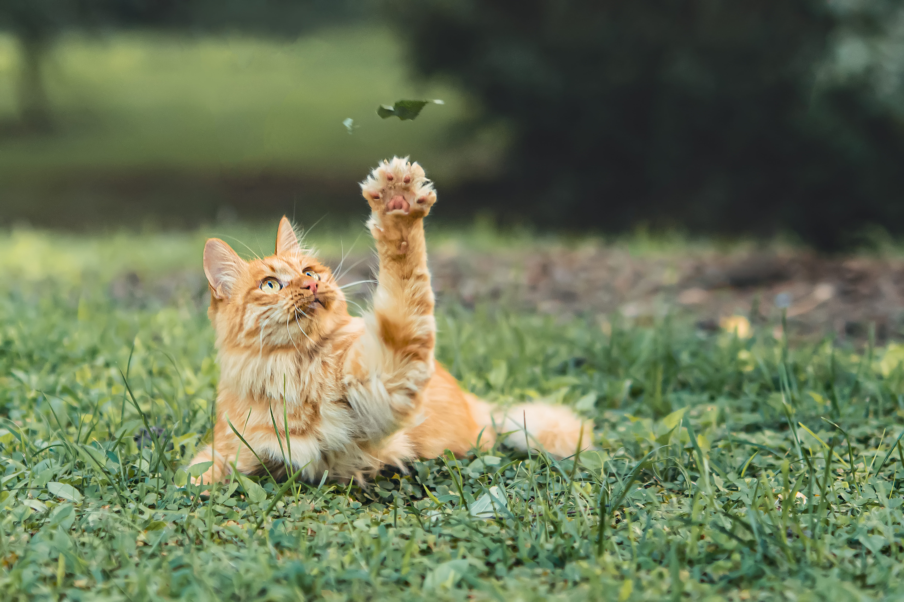

Um pouco sobre nós.
A Associação Brasileira de Proteção aos Animais (ABPA) iniciou seu projeto em 2006, com a união de amigos que queriam ajudar a causa animal. Com o crescimento das ocorrências, e a necessidade de se tornar mais profissional, em 2013 abriu-se então nosso CNPJ.
Todo o trabalho voluntário é mantido pelas doações dos contribuintes, e pelo sentimento de dever cumprido, ao resgatar e remanejar um animal indefeso.
O abandono de animais é realidade, e precisamos cada vez mais da ajuda da população, para auxiliar os animais afetados. Hoje a maior dificuldade da ONG é encontrar lares temporários para os animais resgatados. E nisso você pode ajudar!.
Nossas ações:
- Resgates
- Castrações
- Vacinações
- Lar temporário